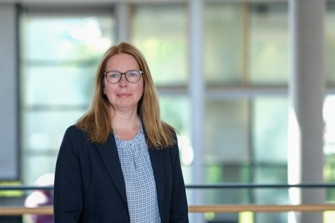

Von außen betrachtet sind Organisationen oft als Strukturen sichtbar – als Prozesse, Hierarchien, Dokumente und Zahlen. Doch die meisten Menschen lassen sich nicht von Strukturen, sondern von Visionen und Personen anziehen. Genau hier setzt die Kraft des Interviews an – nicht als bloßes Informationsmedium, sondern als ein menschlicher Blick hinter eine Idee, eine Institution oder ein Projekt.
Interviews öffnen einen Raum, in dem Geschichten erzählt und Werte vermittelt werden und Unternehmenskultur erlebbar wird. Die persönliche Perspektive des/der Interviewten verleiht Glaubwürdigkeit, die schwer durch standardisierte Texte zu erreichen ist. Sie baut Vertrauen auf, schafft Nähe und ermöglicht eine emotionale Verbindung.
Besonders bedeutungsvoll ist dieser Ansatz in der internen Kommunikation. Hier geht es nicht nur um Wissensmanagement, sondern um die Verankerung von Werten, die Stärkung des Unternehmensgefühls und die Schaffung von Identifikation. Interviews mit Führungskräften, Projektteams oder Kolleg*innen schaffen Verständnis für Entscheidungsprozesse.
In der Deutschen Nationalbibliothek haben wir in den vergangenen Jahren mit verschiedenen Interviewformaten experimentiert und mittlerweile ein festes Set entwickelt.
Erfahrungen teilen: Jubilare im Mittelpunkt
Ein Beispiel ist das Format Jubilare erzählen
. Hier steht
nicht die Leistung, sondern die Lebensgeschichte im Fokus. Mit Fragen
wie: Was hat Sie damals hierhergeführt?
und Wie hat sich das
Arbeitsleben verändert?
teilen Kolleg*innen mit kleinen und großen
Jubiläen prägende Momente, Anekdoten und Erlebnisse. Angereichert wird
das Format durch Fragen, die einem Poesiealbum ähneln: Was macht Ihr
Büro besonders? Was ist Ihr Lieblingsessen in der Kantine? Welche
persönliche Notiz möchten Sie Kolleg*innen mitgeben?
Zwischen den Regalen: Die Geschichten von Nutzenden
Ein weiteres Beispiel ist die Reihe Zwischen den Regalen
, in
der Nutzende der Deutschen Nationalbibliothek zu Wort kommen. Sie kommen
aus unterschiedlichen Bereichen, mit unterschiedlichen Zielen – als
Forschende, Studierende, Autor*innen oder anderer Berufsbranchen. Sie
nutzen die Lesesäle in Leipzig und Frankfurt als Recherche-, Arbeits-
oder Lernort. In diesem Format kommen sie zu Wort und geben Einblicke in
ihre Arbeit, stellen Projekte vor und erzählen ihre Geschichte.
Zwischen den Regalen
nimmt dabei häufig eine doppelte Bedeutung
ein, denn viele der Interviewten sitzen nicht nur wörtlich zwischen
Regalen, sondern so tut es auch ihr Werk – ein bis drei Stockwerke
tiefer in der Sammlung. Auch diese werden in der Reihe vorgestellt. So
entsteht eine Verbindung zwischen dem Bestand und dessen Nutzenden.
1 von 600
Sie sind eine oder einer von 600, die die Deutsche Nationalbibliothek
mit ihrem Engagement zu Deutschlands kulturellem Gedächtnis machen. In
1 von 600
gewähren Mitarbeitende einen Blick in ihre Arbeit und
ihr #sinnvollesSchaffen: Mit Fragen wie: Was darf an Ihrem
Arbeitsplatz nicht fehlen?
, Was ist Ihr Lieblingsplatz?
und
Wie sieht ein Arbeitstag aus?
werden Arbeitswelten intern und
extern greifbar. Kolleg*innen lernen ihre Büronachbar*innen näher
kennen, Interessierte finden Antworten auf Arbeitsabläufe und
Kultur.
Ein Abschied. Ein Neuanfang.
Ute Schwens war Direktorin der Deutschen Nationalbibliothek in Frankfurt am Main und ständige Vertreterin des Generaldirektors.
Sie arbeitete seit 1980 in wechselnden Verantwortlichkeiten in der Deutschen Nationalbibliothek. 1999 hat sie die Leitung des Frankfurter Hauses übernommen. Am 31. Januar 2026 wurde Ute Schwens in den Ruhestand versetzt. In einem Gespräch kurz vor ihrem Austritt schaute sie zurück auf 48 Jahre Berufserfahrung.1
Kathrin Brannemann hat am 1. Februar das Amt der Direktorin der Deutschen Nationalbibliothek in Frankfurt am Main angetreten und ist zugleich eine der beiden ständigen Vertreter*innen des Generaldirektors der Deutschen Nationalbibliothek, Frank Scholze. In ihrem Antrittsinterview – welches hier erneut publiziert wird – teilte sie Werte und Überzeugungen und einen Einblick auf die kommende Aufgabe.2
Bibliotheksarbeit wirkt unmittelbar
Frau Brannemann, können Sie uns zu Beginn ein wenig über sich selbst erzählen? Welche Impulse haben Sie ursprünglich in die Bibliothekswelt geführt?
Meine Begeisterung für Bibliotheken hat sehr früh begonnen. Einen Teil meiner Kindheit habe ich in den USA verbracht. Bereits in der Grundschule hatte ich dort einen kleinen Bibliotheksdienst und als ich meinen ersten eigenen Bibliotheksausweis bekommen habe, war das ein prägendes Erlebnis. Ich war fasziniert davon, wie Wissen gesammelt, geordnet und für alle zugänglich gemacht wird. Den Ausweis habe ich noch. Diese frühe Nähe zu Büchern und Bibliotheken hat vermutlich meinen weiteren Weg mit beeinflusst. Im Studium habe ich mich zunächst dem Archivbereich zugewandt und dort auch auf Anregung meines Vorgesetzten praktische Erfahrungen gesammelt. Gleichzeitig ist mir immer klarer geworden, dass ich genau an der Schnittstelle zwischen Wissen, Struktur und Menschen arbeiten möchte. Das Gefühl, Wissen zu entdecken und weiterzugeben, begleitet mich bis heute. Schließlich hat mich mein Weg unter anderem nach Köln geführt, wo ich meine fachliche Ausrichtung im Bibliotheks- und Informationsstudium vertiefen konnte, und von dort, über meine weiteren beruflichen Stationen, bis heute zur DNB.

Mögen Sie unseren Leserinnen und Lesern kurz erzählen, welche Stationen auf Ihrem Weg zur Direktorin unseres Frankfurter Hauses prägend waren?
Auf meinem Weg zur DNB gab es viele prägende Impulse. Ein zentraler Motor war dabei immer meine Neugier – sie hat mich dazu gebracht, unterschiedliche Bereiche kennenzulernen und neue Perspektiven einzunehmen. Ich habe in sehr verschiedenen Kontexten gearbeitet, unter anderem in Archiven, bei einem Bibliotheksverbund, in einer Spezialbibliothek, im universitären Bereich sowie in der außeruniversitären Forschung. Diese Vielfalt hat meinen Blick auf Bibliotheken und ihre Rollen stark geschärft.
Für mich als Führungskraft war meine Zeit an der Universität Göttingen besonders prägend. Dort stand ich vor der Aufgabe, ein sehr großes Haus mit knapp fünfhundert Mitarbeiter*innen, an dem zuvor ein Gremium von drei Direktoren tätig gewesen war, zeitweise allein zu führen. In einer Phase knapper werdender Ressourcen ging es darum, Orientierung zu geben, Prioritäten zu setzen, Entscheidungen transparent zu machen und Verantwortung zu übernehmen. Gleichzeitig habe ich gelernt, wie wichtig und unerlässlich der Verlass auf die Kompetenz und das Engagement der Mitarbeitenden ist. Mir wurde viel Vertrauen entgegengebracht, das ich auch hoffentlich in geeigneter Form zurückgeben konnte. Diese Erfahrung hat mein Verständnis von Führung, gemeinsamer Zusammenarbeit und strategischer Ausrichtung nachhaltig geprägt.
Wenn Sie einmal an diese ganze Zeit zurückdenken, was war das schönste (das lustigste, das emotionalste) Erlebnis in Ihrem bisherigen Bibliotheksleben?
Ein besonders schönes und zugleich emotionales Erlebnis war für mich ein Besuch der internationalen Forschungsstation in Ny-Ålesund in der Arktis im Jahr 2019. Als Leiterin der Bibliothek des Alfred-Wegener-Instituts Helmholtz-Zentrum für Polar- und Meeresforschung (AWI) war ich damals Teil einer Delegation und durfte zehn Tage lang die Forschungsarbeit direkt vor Ort erleben – an einem der abgelegensten Orte der Welt.
Die Bibliothek in Ny-Ålesund funktioniert ähnlich wie die
Unterstützung auf dem Forschungsschiff Polarstern des AWI: Sie stellt
sicher, dass Forschende aus vielen Nationen jederzeit Zugang zu
verlässlicher Information haben – direkt auf dem Schreibtisch, selbst am
Ende der Welt
.
In dieser Umgebung wurde für mich spürbar, dass Bibliothekarin zu sein nichts Abstraktes ist. Unsere Arbeit hat eine direkte, konkrete Wirkung auf wissenschaftliche Arbeit und gesellschaftlich hochrelevante Themen. Persönlich habe ich in dieser Zeit unglaublich viel über den Klimawandel gelernt, zahlreiche fachliche Vorträge gehört und erlebt, wie international, kooperativ und engagiert Forschung dort oben funktioniert. Dieses Erlebnis hat mich fachlich wie emotional nachhaltig geprägt.
Worin sehen Sie aktuell die größten Herausforderungen und wichtigsten Entwicklungen für Bibliotheken und insbesondere für Landesbibliotheken und vor allem die Deutsche Nationalbibliothek?
Für die Beantwortung dieser Frage benötigt man eigentlich mehr Zeit, da das Thema sehr facettenreich ist. Wenn ich mich auf eine Herausforderung fokussieren darf, dann liegt eine der größeren Herausforderungen für Bibliotheken seit Jahren in der konsequenten Bewältigung der digitalen Transformation. Für Landesbibliotheken und insbesondere für die Deutsche Nationalbibliothek bedeutet das vor allem, mit der stetig wachsenden Menge digitaler Publikationen umzugehen, diese langfristig zu sichern und dauerhaft zugänglich zu machen. Die Sammlung, Erschließung und Archivierung von Netzpublikationen, Forschungsdaten und digitalen Kulturgütern stellt hohe technische, organisatorische und rechtliche Anforderungen. Für die DNB steht dabei die Umsetzung ihrer strategischen Kernaufgaben im Mittelpunkt: das gesamte publizierte, kulturelle Erbe Deutschlands zu sammeln, dauerhaft zu bewahren, zu verzeichnen und zugänglich zu machen – unabhängig vom Format. Das Pflichtexemplarrecht bildet dafür nach wie vor die unverzichtbare Grundlage, muss aber kontinuierlich an digitalen Publikationsformen weiterentwickelt und praktisch wirksam umgesetzt werden. Gleichzeitig geht es darum, digitale Langzeitarchivierung, offene und verlässliche Zugänge, internationale Vernetzung sowie eine klare Nutzerorientierung zusammenzudenken. So sollten Daten aktiv strukturiert, vernetzt und für unterschiedliche Zielgruppen nutzbar gemacht werden. Offene Schnittstellen, standardisierte Metadaten und die stärkere Einbindung in nationale und sogar internationale Dateninfrastrukturen können dies unterstützen. Die Gemeinsame Normdatei (GND) ist zum Beispiel ein Dienst, um Normdaten kooperativ nutzen und verwalten zu können. All dies erfordert Priorisierung, Kooperation und ein hohes Maß an strategischer Klarheit wie sie in den Strategischen Prioritäten 2025-2027 der DNB angelegt sind. Nicht zuletzt ist auch der Kompetenzwandel eine wichtige Herausforderung: Die strategische Ausrichtung der DNB betont die Bedeutung interdisziplinärer Zusammenarbeit und neuer Qualifikationen an der Schnittstelle von Bibliothekswesen, IT und Datenmanagement.
Ganz offen gedacht: Was sollte aus Ihrer Sicht unbedingt bewahrt werden?
Ganz offen gedacht sollte alles bewahrt werden, was unsere Kultur, unser Wissen und unsere Geschichte greifbar macht – unabhängig davon, ob es gedruckt, digital, bildlich oder auditiv ist. Das reicht von Büchern, Zeitschriften und wissenschaftlichen Publikationen, Musik über audiovisuelle Medien bis hin zu digitalen Inhalten, die heute alltäglich sind, morgen aber verloren gegangen sein könnten. Besonders wichtig ist mir, dass wir auch die Vielfalt der Perspektiven und Erfahrungen dokumentieren: nicht nur das Offizielle, sondern auch das, was oft am Rande steht – lokale Geschichte, kulturelle Nischen oder Forschung, die noch nicht Mainstream ist. Denn Bibliotheken und andere Gedächtnisinstitutionen sind nicht nur Speicher, sondern Spiegel unserer Gesellschaft und unserer Zeit und müssen den gesellschaftlichen Dialog suchen und fördern. Die DNB hat mit dem Deutschen Buch- und Schriftmuseum, dem Deutschen Exilarchiv 1933–1945 und dem Deutschen Musikarchiv organisatorische Einheiten im Haus, die diesen Prozess mit unterstützen.
Wo liegen Ihre Prioritäten in den ersten Monaten Ihrer neuen Tätigkeit?
In den ersten Monaten liegt mein Fokus vor allem darauf, zuzuhören, kennenzulernen und zu verstehen – die Häuser in Leipzig und Frankfurt, die Mitarbeitenden, die bestehenden Strukturen und Arbeitsweisen. Eine Faustregel, die ich aus Erfahrung mitbringe, ist: Die ersten sechs Monate dienen dem Ankommen, nach etwa einem Jahr fühlt man sich dann meistens in allen Belangen einer Einrichtung wirklich sattelfest. Parallel möchte ich von Beginn an natürlich versuchen Impulse zu setzen, Dinge zu bewegen und die strategische Weiterentwicklung aktiv mit zu unterstützen, ohne überstürzt zu handeln. Es geht darum, ein gutes Gleichgewicht zwischen Verstehen, Beziehungen und Vertrauen aufzubauen und ins strategische Handeln zu finden.
Gibt es einen Wert oder eine Überzeugung, die Sie in Ihrer Arbeit besonders prägt?
Ein Wert, der meine Arbeit besonders prägt, ist das Prinzip des Verständnisses: Wo man Themen, Inhalte und Zusammenhänge nachvollziehen kann, entsteht hoffentlich ein Verständnis – und darauf lassen sich fundierte Entscheidungen aufbauen. Für mich bedeutet das auch Transparenz: offen zu kommunizieren, was machbar ist, was aber auch nicht und warum, um möglichst die Mitarbeitenden und externe Partner*innen mitzunehmen. Natürlich gelingt das nicht immer perfekt, aber es ist ein Leitprinzip, das meine Arbeitsweise prägt und den Austausch, die Zusammenarbeit und die Akzeptanz von Entscheidungen unterstützt. Kenntnis schafft Verständnis.
Sinnvolles Schaffen – was bedeutet das für Sie, wenn Sie an Ihre neue Tätigkeit in der Deutschen Nationalbibliothek denken?
Sinnvolles Schaffen bedeutet für mich nach Außen gerichtet, an etwas zu arbeiten, das über den unmittelbaren Moment hinaus Wirkung entfaltet. In der Deutschen Nationalbibliothek sehe ich genau diese Sinnhaftigkeit: Sie bewahrt das kulturelle und geistige Erbe unseres Landes und macht es für heutige und zukünftige Generationen zugänglich. Auf diesem Wege fördert und unterstützt sie die Informations- und Meinungsfreiheit in diesem Land. ‚Sinnvoll’ ist für mich also eng verbunden mit Relevanz, Nachhaltigkeit und der spürbaren Wirkung unserer Arbeit.
Zudem bedeutet sinnvolles Schaffen für mich auch, Verantwortung zu übernehmen: für Qualität, für Kooperationen im nationalen und internationalen Kontext und für die kontinuierliche Weiterentwicklung der Bibliothek als moderne Gedächtnisinstitution. In meiner neuen Tätigkeit möchte ich dazu beitragen, die strategischen Ziele der DNB mit Leben zu füllen und gemeinsam Lösungen zu entwickeln, die Bestand haben. Nach innen gerichtet bedeutet Sinnvolles schaffen für mich dabei, die Mitarbeitenden in diese Prozesse einzubeziehen, dass sie ihr Know-How und Kompetenzen einbringen können und ihre Fähigkeiten zu stärken.
Kathrin Brannemann ist seit 1. Februar 2026 Direktorin der Deutschen Nationalbibliothek in Frankfurt am Main.
Josephine Kreutzer, Referatsleitung Kommunikation, Deutsche Nationalbibliothek.